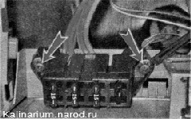

Облицовка туннеля пола - снятие и установкаСнятие 1. Подготавливаем автомобиль к выполнению работы и отсоединяем клемму от отрицательного вывода аккумуляторной батареи. 2. Снимаем рукоятку рычага переключения передач вместе с чехлом 3. Крестовой отверткой отворачиваем саморез крепления правой накладки консоли панели приборов. 4. Сместив вперед, снимаем накладку. 5. Аналогично снимаем левую накладку. 6. С правой и с левой сторон туннеля крестовой отверткой отворачиваем два самореза переднего крепления облицовки туннеля пола.
8. Снимаем облицовку рычага. Приподняв рычаг стояночного тормоза, крестовой отверткой отворачиваем саморез крепления выключателя контрольной лампы. Отсоединяем от выключателя колодку проводов.
9. Через отверстие в кронштейне выключателя, крестовой отверткой отворачиваем саморез заднего крепления облицовки туннеля пола. 10. Приподнимаем облицовку туннеля пола над рычагом переключения передач и переворачиваем. 11. Отсоединяем колодку проводов от прикуривателя. 12. Поддев отверткой, извлекаем из отверстия облицовки колодку диагностического разъема. 13. Крестовой отверткой отворачиваем два самореза крепления блока предохранителей и отсоединяем блок от облицовки. 
14. Снимаем облицовку туннеля пола Установка Устанавливаем обивку туннеля пола в обратной последовательности. |